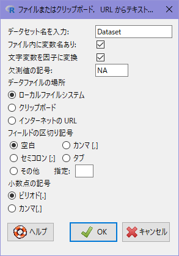
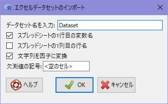

※本ページの内容はテキストには記載されていません
Rではデータセットを用いることで効率的な分析が行えるようになっています。
2.1 データセットとは
Rにおけるデータセットとは分析対象となるデータの集まりを意味します。例えば、下表のような車の諸元をまとめたものはデータセットのひとつです。
表計算ソフト(Excel)と比較すると下表のようなイメージになります。
| R | Excel | 備考 | |
|---|---|---|---|
| 処理部 | R | Excel | インタプリタ1 |
| データ | データセット | シート | 数式・書式を含まないもの |
| GUI | R/Rcmdr2 | Excel | Windows版Rは簡単なGUIあり |
| スクリプト | R Script | VBA | |
| 機能拡張 | パッケージ | アドオン |
1 動きを見ている限りExcelはセルでのイベント駆動によるインタプリタ処理だと思われます
2 R Commanderの実装としてはパッケージ
各シート単位で様々な計算やグラフ作成ができるのがR Commander(Rcmdr)だと思ってください。
Rではデータセットはdata.frame型という変数型を用いて一つの変数として扱います。data.frame型変数はTidy data（整然データ）3という概念を満たす変数型です。
Tidy data（整然データ）
以下の条件を満たす表型のデータをTidy dataといい、構造と意味が合致しているのが特徴です。
1. 個々の変数が一つの列をなす
2. 個々の観測が一つの行をなす
3. 個々の値が一つのセルをなす
4. 個々の観測の構成単位の累計が一つの表をなす
なので、神ExcelはTidy dataにはなりませんのでRでそのまま扱うことはできません。
2.1.1 data.frame型
data.frame型変数は下記のような構造を取ります。特徴的なのは一つの変数（データセット）で複数の変数を扱うことができる点です。前出の車両諸元に関するデータセットでは11個の実数型変数（num）からなる32組の観測（車種）を持っています。
'data.frame': 32 obs. of 11 variables:
$ mpg : num 21 21 22.8 21.4 18.7 18.1 14.3 24.4 22.8 19.2 ...
$ cyl : num 6 6 4 6 8 6 8 4 4 6 ...
$ disp: num 160 160 108 258 360 ...
$ hp : num 110 110 93 110 175 105 245 62 95 123 ...
$ drat: num 3.9 3.9 3.85 3.08 3.15 2.76 3.21 3.69 3.92 3.92 ...
$ wt : num 2.62 2.88 2.32 3.21 3.44 ...
$ qsec: num 16.5 17 18.6 19.4 17 ...
$ vs : num 0 0 1 1 0 1 0 1 1 1 ...
$ am : num 1 1 1 0 0 0 0 0 0 0 ...
$ gear: num 4 4 4 3 3 3 3 4 4 4 ...
$ carb: num 4 4 1 1 2 1 4 2 2 4 ... data.frame型変数では実数型以外にも整数型・文字型・論理型・日付型・因子型などの様々な変数を混在させることが可能です。
2.2 組み込みデータセット
組み込みデータセットはテキストP36のパッケージ付属データと同義です。標準で用意されているdatasetsパッケージは名前の通り様々なデータセットが組み込まれているパッケージです。代表的なデータセットを簡単に紹介しておきます。
2.2.1 Iris flower data set
統計学の世界で最も有名な「フィッシャーのアヤメ」のデータセットです。三品種のアヤメの花の大きさを計測したデータで、萼片（Sepal）と花弁（Petal）の計測値が品種ごとに各50組、計150組が格納されています。品種（Species）は因子型と呼ばれる変数型になっており、層別処理を行う際に便利なようになっています。
Code
datasets::iris'data.frame': 150 obs. of 5 variables:
$ Sepal.Length: num 5.1 4.9 4.7 4.6 5 5.4 4.6 5 4.4 4.9 ...
$ Sepal.Width : num 3.5 3 3.2 3.1 3.6 3.9 3.4 3.4 2.9 3.1 ...
$ Petal.Length: num 1.4 1.4 1.3 1.5 1.4 1.7 1.4 1.5 1.4 1.5 ...
$ Petal.Width : num 0.2 0.2 0.2 0.2 0.2 0.4 0.3 0.2 0.2 0.1 ...
$ Species : Factor w/ 3 levels "setosa","versicolor",..: 1 1 1 1 1 1 1 1 1 1 ...2.2.2 New York Air Quarity Measurements
テキストにも出てくる1973年5月から9月にかけてニューヨークで観測された大気データのデータセットで欠損値（欠測値）が含まれています。オゾン濃度、日射量、風速、気温の測定値と月、日のデータが格納されている一種の時系列のデータセットです。6変数のすべてが数値型ですが、整数型（int）と実数型（num）が混在しています。欠損値（欠測値）はNAと表示されます。
Code
datasets::airquality'data.frame': 153 obs. of 6 variables:
$ Ozone : int 41 36 12 18 NA 28 23 19 8 NA ...
$ Solar.R: int 190 118 149 313 NA NA 299 99 19 194 ...
$ Wind : num 7.4 8 12.6 11.5 14.3 14.9 8.6 13.8 20.1 8.6 ...
$ Temp : int 67 72 74 62 56 66 65 59 61 69 ...
$ Month : int 5 5 5 5 5 5 5 5 5 5 ...
$ Day : int 1 2 3 4 5 6 7 8 9 10 ...
2.3 データセットを作成する
R Commanderにはデータセットを作成するための機能が組み込まれていますが、使いやすいとは言えないので、Excelのような表計算ソフトを使ってデータファイルを作成することをおすゝめします。R Commanderが対応している代表的なファイル形式はxls形式、xlsx形式、CSV形式です。変数名などに日本語が含まれるデータをCSV形式にする場合には必ずUTF-8エンコーディングを指定して保存してくださいください。
R CommanderのGUIによる読み込み処理ではエンコーディングが指定できないために日本語版Excelがデフォルトで書き出すシフトJISエンコーディングされたファイルには対応していません4。
4 R 4.2からデフォルトロケール（エンコーディング）をシフトJISからUTF-8に変更したために起こる日本語版Windows特有の問題です
2.3.1 R Commanderのためのデータセット
R CommanderではGUI操作の弊害で様々なオプションの指定ができないためエンコーディング以外に下記の条件を満たすファイルを作成することで読み込み時のエラーを回避するようにしてください。
- Tidy data形式を守る
- 神Excelにしない
- 一行目には必ず変数名を記載する
- 変数名に（
_,-を除く）記号・空白を使わない - 変数名の最初の文字を数字・記号（
_,-）にしない
- 変数名に（
- 各列の行数を合わせる
- 各列の行数が一致していない場合は自動的に先頭からのデータを用いて行数が一致するように処理してしまう場合があります
- 欠損値（欠測値）の扱いに関しては、明示的に
NAのように文字を入力するか空白（何も入力しない）にするかルールをあらかじめ決めておく
2.4 データセットを読み込む
R Commanderでデータセットのファイルを読み込むには［データ］メニューを使います。
2.4.1 CSV(UTF-8)形式の場合
［データ］-［データのインポート］-［テキストファイルまたはクリップボード,URL から…］を実行すると下図のようなダイアログが開きます。

| 設定項目 | 設定内容 |
|---|---|
| データセット名を入力 | データセットの変数名を指定 |
| ファイル内に変数名あり | 一行目が変数名か否か |
| 文字変数を因子に変換 | 文字型変数を因子型変数に変換するか否か |
| 欠測値の記号 | 欠損値（欠測値）を意味する文字を指定 |
| データファイルの場所 | 読み込ませたいデータの位置を指定 |
| フィールドの区切り記号 | CSVの場合は「カンマ」、TSVの場合は「タブ」 |
| 小数点の記号 | 通常は「ピリオド」 |
データファイルの場所をローカルファイルシステムまたはインターネットのURLにして ［OK］ボタンをクリックします。ローカルファイルの場合はファイルダイアログが、インターネットURLの場合は入力ダイアログが開きますのでダイアログに合わせた操作を行ってください。
2.4.2 xls形式／xlsx形式の場合
［データ］-［データのインポート］-［エクセルファイルから…］を実行すると下図のようなダイアログが開きます。

| 設定項目 | 設定内容 |
|---|---|
| データセット名を入力 | データセットの変数名を指定 |
| スプレッドシートの1行目の変数名 | 一行目が変数名か否か |
| スプレッドシートの1列目の行名 | 一列目が行名か否か |
| 文字列を因子に変換 | 文字型変数を因子型変数に変換するか否か |
| 欠測値の記号 | 欠損値（欠測値）を意味する文字を指定 |
各設定項目を設定後、［OK］ボタンをクリックするとファイルダイアログが開きますので読み込みたいファイルを指定してください。なお、ファイル内に複数のシートがある場合は最初のシートだけを読み込みます5。
5 GUI操作では任意のシートを読み込むことはできません
2.4.3 .RData形式の場合
［データ］-［データセットのロード…］を実行するとファイル選択ダイアログが開きますので読み込みたい.RData形式のファイルを指定します。読み込むと自動的にアクティブデータセットに読み込んだデータセット名が表示されます。
サンプルで提供されているファイルに格納されているデータセット名は下表の通りです。なお、データセット名が同一のファイルを読み込んだ場合、確認なしで上書きされます。
| ファイル名 | データセット名 | データ数 |
|---|---|---|
| バイタル.RData | VitalSign | 57 obs. of 13 variables |
| 外来患者ストレス.RData | PatientStress | 337 obs. of 14 variables |
| 外来患者ストレス(元データ).RData | PatientStress | 337 obs. of 9 variables |
2.5 アクティブデータセット
R Commanderにはアクティブデータセットという概念があります。アクティブデータセットとは計算対象となるデータセットのことで、設定されていないと統計量の算出やグラフによる可視化ができません。
アクティブデータセット
R CommanderはRの機能（関数）を利用していますので、Rでも同様の機能を利用することは可能ですが、アクティブなデータセットを常に意識する必要があり参照間違いや変数名のコンフリクトを起こしやすいためRで利用することはおすゝめできません。